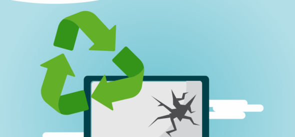
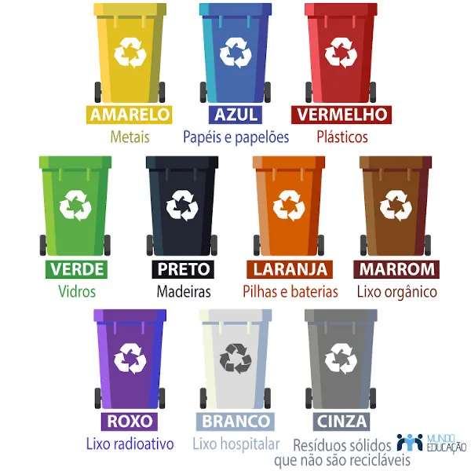

Lixo Eletronico
Os equipamentos elétricos e eletrônicos possuem diversos componentes tóxicos em suas estruturas. Se descartados de maneira incorreta, esses resíduos podem contaminar o solo e os lençóis freáticos, colocando em risco a saúde pública.

Tem como reciclar o lixo eletrônico?

De um único aparelho eletroeletrônico é possível retirar plástico, vidro, cobre, metais preciosos como ouro e prata, papel e muitos outros que voltam para a cadeia produtiva para a fabricação de novos produtos. Porém, o processo exige um controle de toda a cadeia, tecnologia de ponta e segurança.

Como fazer a reciclagem do lixo eletrônico?
O processo de reciclagem inicia-se nos pontos de coleta de lixo eletrônico. Eles estão disponíveis em diversas cidades brasileiras, podendo ser encontrados em mercados, shoppings e centros comerciais. Em seguida, os resíduos eletrônicos são enviados para empresas e cooperativas que fazem o trabalho de reciclagem.
Quais são as cores da coleta seletiva e o que representam?
